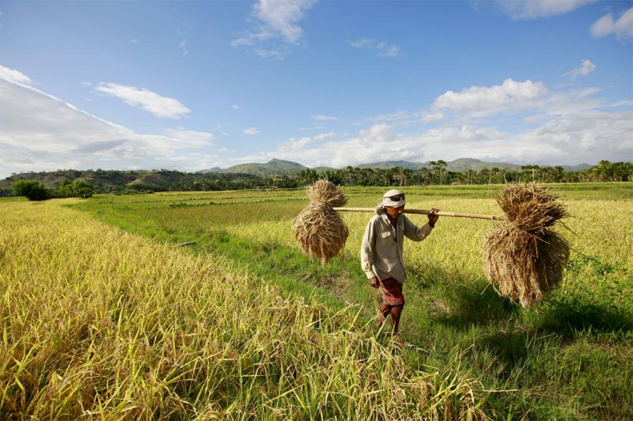

<div class="company">
  <div class="jumbotron">
    <h1 class="text-center">anyHarvest</h2>
    <div class="container">
      
    </div>
    <div class="container">
    <h4 class="text-center">what we do</h4>
    <div class="hl"></div>
    <p class="col-md-offset-2 col-md-8 text-justify"><strong>anyHarvest</strong> was created to help small-scale farmers increase their local food security and their return-on-investment which would improve their quality of living. <strong>anyHarvest</strong> serves as the backdrop for a program that offers current and future farmers, urban food producers, community leaders, and citizens an online avenue for offering their products in a local marketplace.</p>
    </div>
  </div>
</div>
